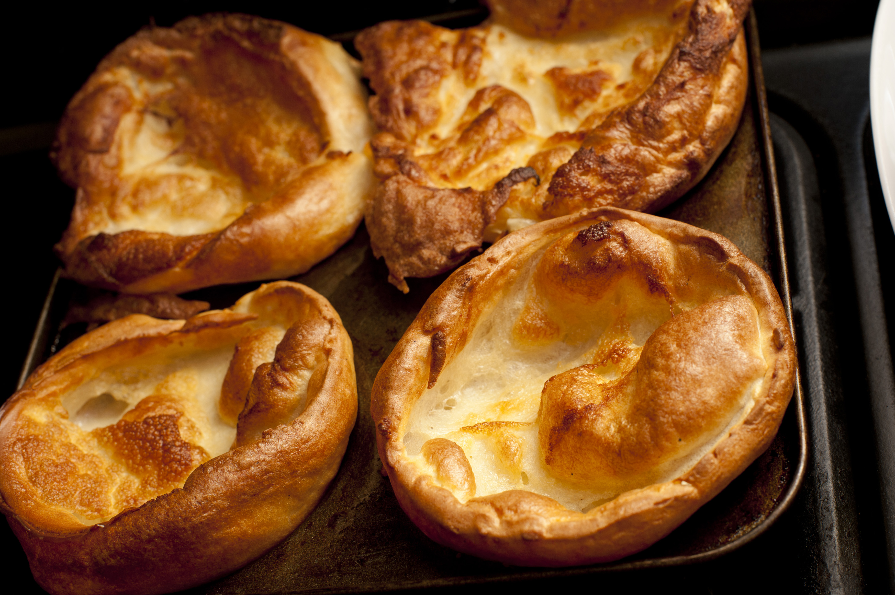

Yorkshire pudding

This is a recipe for a classic British side-dish: Yorkshire pudding. It is usually served with gravy and Sunday roast, but can be eaten with variety of dishes.
This recipe makes 8 large puds.
Ingredients
- Plain flour: 140g
- Eggs: 4
- Milk: 200ml
- Sunflower oil
- Salt and pepper: to taste
Steps
- Heat the oven to 210 degrees Celsius
- Drizzle the Yorkshire pudding tin with sunflower oil and put into the oven to heat through
- Beat the eggs into the flour in a container, until smooth
- Gradually add milk, continuing to beat, until there are no lumps left
- Season with salt and pepper
- Carefully and evenly pour the batter into the tin holes
- Bake for 20-25 minutes, until puffed-up and browned
Back to the recipe list